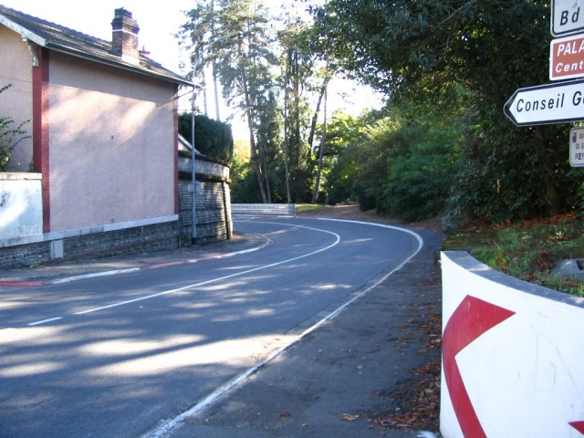
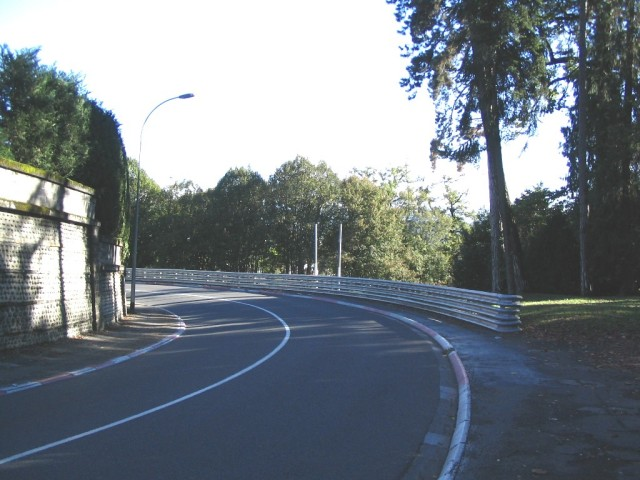
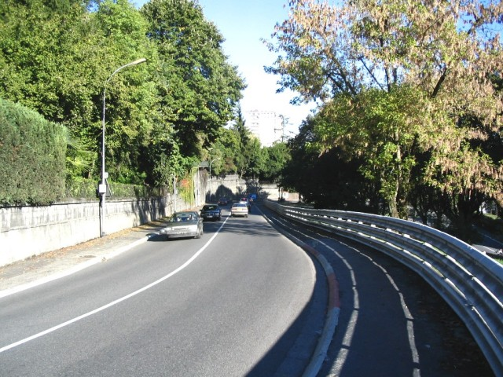
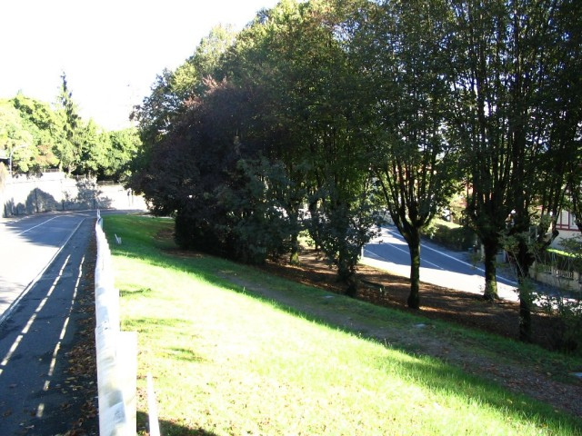
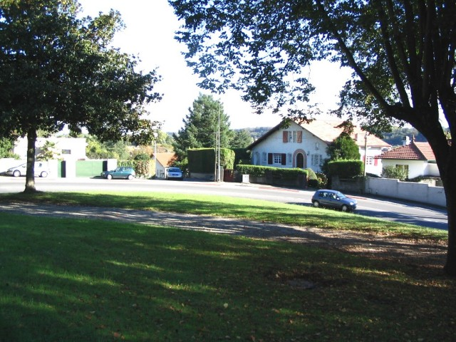
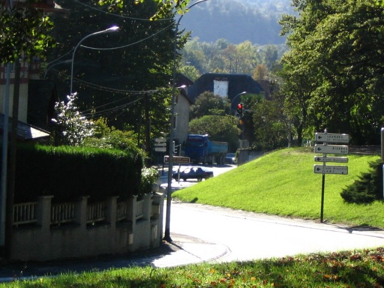
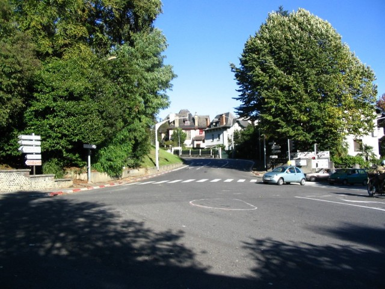

Numbers on map indicate the location of where the photographs were taken.
Pau - Bussion & Chicane (Page 4 of 5)
|| Contents || La Gare | Pont Oscar & Lycée | Casino & Foch | Bussion & Chicane | Ave. Gaston Lacoste || Home
Numbers on map indicate the location of where the photographs were taken.
Return to racingcircuits.net's Photo Archive Main Index

19 - Beginning of the Poeymiraud downhill.

20 - Poeymiraud with the permanent guard
rail.

21-A - Copse corner (Virage du Buisson)
is a right hairpin. See the track to the right.

21-B

21-C

22 - Exit of this hairpin, followed by a
left-right esse, leading to the chicane. The chicane stands in the middle
of a crossroad (see the red light).

23 - The left-right chicane looking back. A
kerb is settled in this oval pattern on the ground : it's the apex of the left hander.
Here is the end of the steepest part of the downhill.
Photographs & text ©Michel Marti. Reproduced here with kind permission.